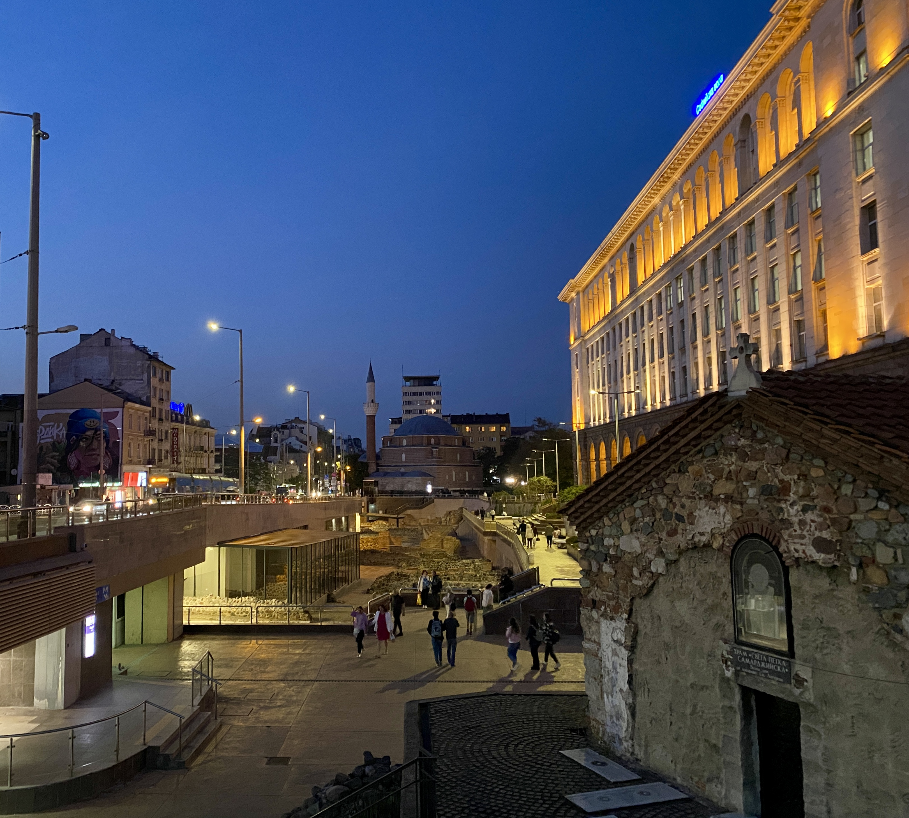
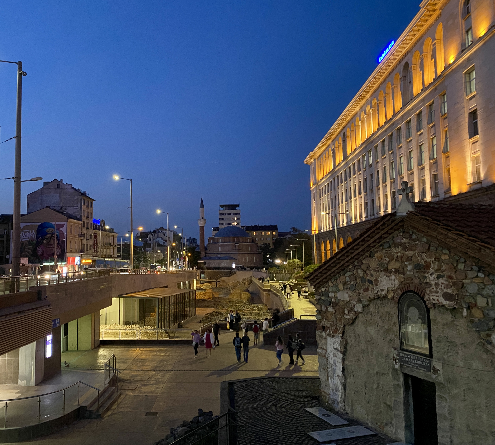

In western Bulgaria nestled in the eastern balkan mountain chain, lies its capital and largest city, Sofia.
The city has a rich history dating back thousands of years, with evidence of settlements from various civilizations, including Thracian, Roman, Byzantine, Ottoman, and Soviet.
 

Looking north along Knyagina Maria Luisa Blvd shows the patchwork of cultural influences in Sofia: A 14th century Byzantine church, overshadowed by a Stalinist-era hotel, not 100m from a Sunni mosque, all built upon ancient Thracian and Roman ruins.
And today, a modern subway station.

Alexander Nevsky Cathedral
Sofia's largest symbol of eastern Orthodox christianity. Containing stunning gold accents, historic frescoes, and built in the neo-byzantine style, this church was named after the Russo-Turkish War and Bulgaria's struggle for independence.


Rila Monastery
Rila was founded in the 10th century by the revered hermit Ivan Rilski. Here, he lived a life of asceticism and prayer. Over time, disciples gathered around him, and a monastic community began to form. Ivan Rilski's dedication to his spiritual path lead to the monastery's legacy as a center of Orthodox Christian worship and culture, and today a UNESCO site.


An eastern orthodox fresco depicting the book of Genesis.

Below the monastery, nestled against a river lies the final resting place of Rila's monks.


Plovdiv
Known as the oldest settlement in Europe with roots dating back to 4000BC, Plovdiv blends the preservation of an ancient Roman ampitheatre and a Byzantine fortress, with colourful Revival-era houses.


Throughout the 20th century, Plovdiv was home to Bulgaria's most acclaimed painter, Zlatyu Boyadzhiev.
As an established painter of rural life in Bulgaria and Bulgarian traditions, he suffered a stroke which paralyzed the ride side of his body. Following the stroke, he adapted to his new condition and began painting with his left hand, in an entirely different style - this time more dark and impressionist. Zlatyu still inspires slavic artwork to this day.
Although no longer, clues into Bulgaria's Ottoman past are still commonplace in Plovdiv.


Follow along with my journey east, through Thrace and into Europe's largest city.
Rest stop after crossing the border into Turkiye.